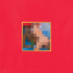
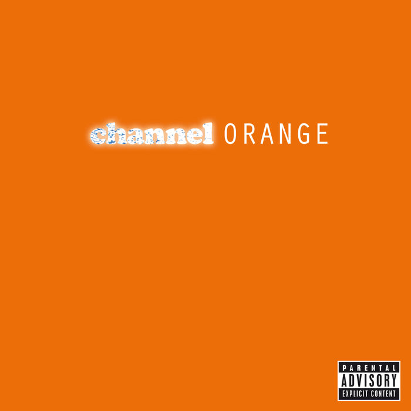
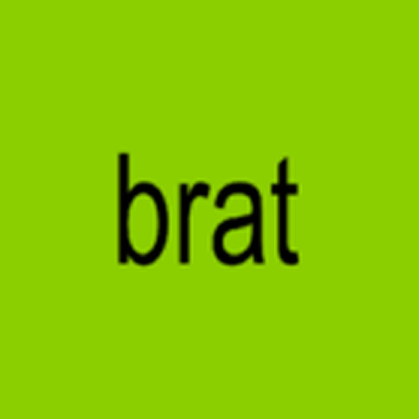
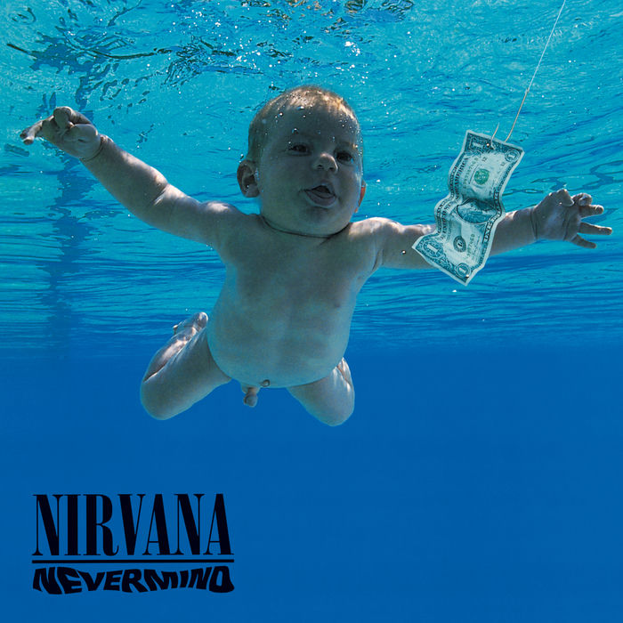
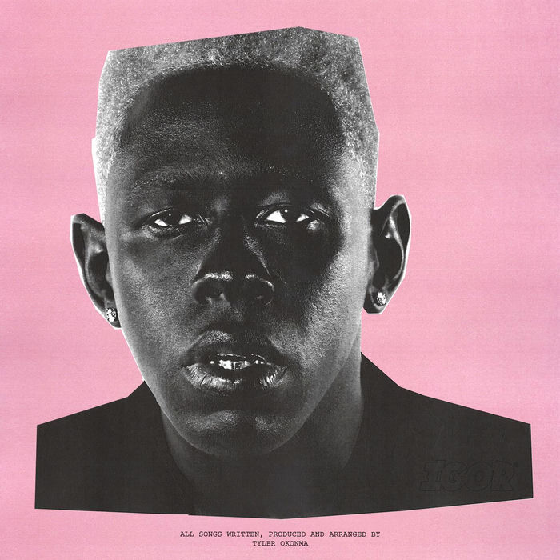
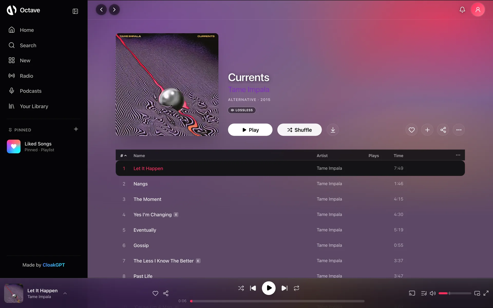

Free · Lossless · No ads, ever
Every song.
Nothing in the way.
A music player that sounds like it costs something and doesn’t. Lyrics that sing along, a player that wears the album, and the whole catalogue in lossless.
Octave is a music player that doesn’t want anything from you. No ads between songs no paywall on lossless, no cap on skips. Just every song you’ve ever loved and the ones you haven’t found yet.
The whole app wears the record.
Octave pulls the colour out of whatever’s playing and repaints itself around it. Player, lyrics, everything. Scroll and watch.

My Beautiful Dark Twisted Fantasy
Kanye West




01 / 04 — Data Saver
128kbps
Thin signal, long commute. It still sounds like music.
02 / 04 — High
320kbps
Higher than any free tier anywhere else goes.
03 / 04 — Lossless
FLAClossless
Bit for bit what the studio sent out. Nothing thrown away.
04 / 04 — Dolby Atmos
Atmosspatial
Where a song was mixed for it, the sound moves around you.
Eight notes.
One Octave.
Side B · 8 tracks
Turn the sound on up top and each one plays its note.
- C01
Lossless & Dolby Atmos
FLAC, bit for bit what the studio sent out. Atmos where the song was mixed for it.
- D02
Lyrics, word by word
Karaoke-timed lyrics that follow the singer syllable by syllable. Tap a line to jump.
- E03
Sing
Pull the vocals down with a slider and take the lead. Real instrumentals where we have them.
- F04
AutoMix
Beat-matched transitions between songs, like someone decent is on the decks.
- G05
Listening parties
Share a link and everyone hears the same second of the same song, wherever they are.
- A06
Podcasts
The Apple Podcasts catalogue, in the same player as your music. Same queue, same speed control.
- B07
Bring your playlists
Paste a Spotify export or a CSV and your library comes with you. Download it for the flight.
- C′08
Wrapped, any day
Your top songs, artists and hours, whenever you want to look — not once a year.


05 — Everywhere
One library.
Every screen.
Your library follows your account, from a browser tab to the phone in your pocket.



Open it in any browser. Add it to your home screen and it behaves like an app.
Open the player →The native app: widgets, Siri, offline downloads and the full karaoke lyrics view.
Get it for iPhone →Rebuilt to match the iPhone app screen for screen. Android 8 and newer.
Get the beta →Get in.
Octave is members-only now. It’s still free and it still has no ads — accounts are how we keep scrapers out and the lights on. Yours comes through our Discord.
795 online now10,916 members
- 1
Join the Discord
It’s where accounts come from, and where new builds, requests and help live.
- 2
Open Octave
Pass the quick human check. No email, no password, no card.
- 3
Link Discord
Access is instant. Your account key restores your library on any device.